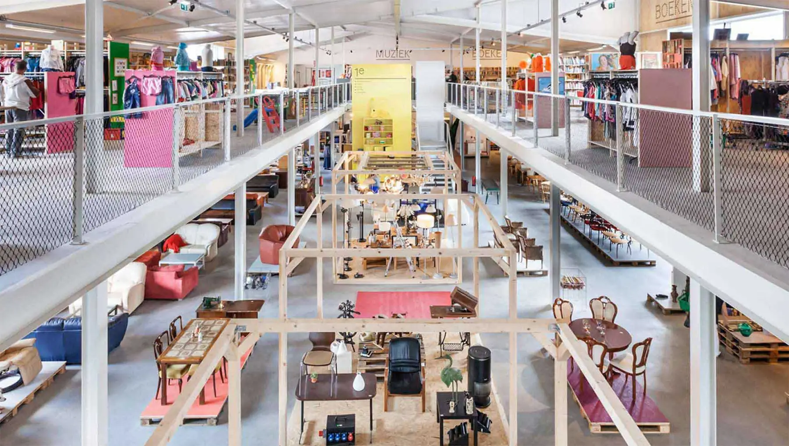
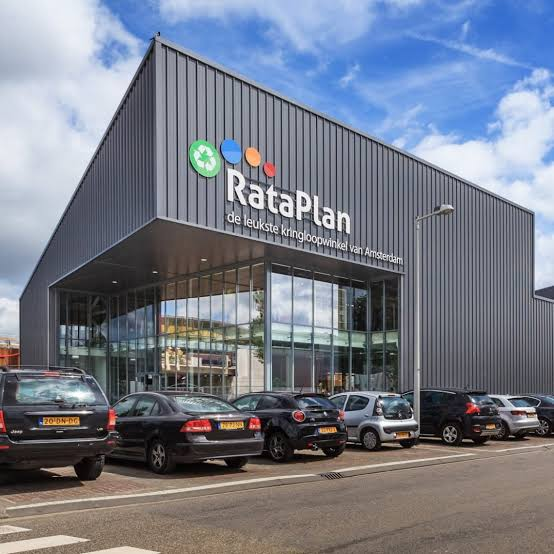
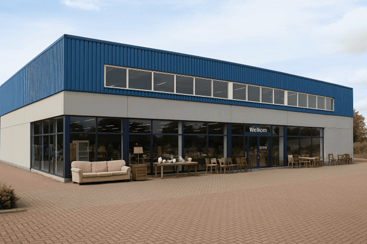
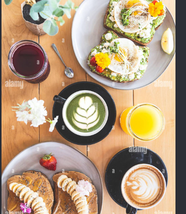

Welkom bij RataPlan
De kringloopwinkel van de toekomst
Samen geven we spullen een tweede leven.
Ontdek ons doel
Ons doel
We verzamelen en verkopen bruikbare spullen, zodat ze een nieuwe eigenaar krijgen.

Goed voor spullen, goed voor de toekomst
Duurzaamheid
Hergebruik zorgt voor minder afval en helpt grondstoffen te besparen.

Samen maken we verschil
Maatschappelijk doel
RataPlan helpt mensen om mee te doen en ervaring op te doen.
- Werkplekken voor verschillende mensen
- Kansen om werkervaring op te doen
- Samen bijdragen aan de samenleving

Lever in. Hergebruik. Maak verschil.
Geef jouw spullen een tweede kans
Lever spullen die je niet meer gebruikt in bij RataPlan.
Neem contact opBel ons: 030 785 6812
review
★★★★★
“Wat een leuke winkel! Ik vond precies wat ik zocht en het voelt goed dat mijn aankoop een tweede leven krijgt.”
